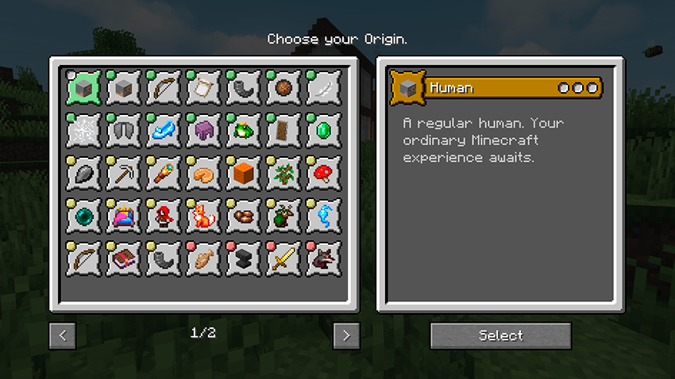
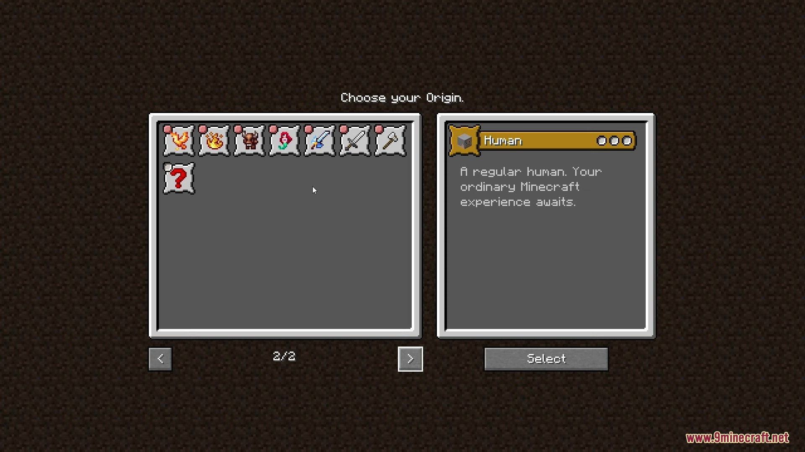

RPG


O equilíbrio total, sem vantagens ou desvantagens iniciais.
Quebra blocos com velocidade incrível e tem faro para encontrar minérios raros.
As plantações crescem instantaneamente ao seu redor e colhe o dobro de alimentos.
Possui lábia para conseguir as melhores trocas e descontos com os Villagers.
O curandeiro puro do grupo, focado totalmente em regeneração e suporte vital.
Utiliza canções mágicas para fortalecer os atributos de todos os aliados próximos.
Bônus em tarefas domésticas e interação com animais moficados.
Mestre da forja. Conserta equipamentos e gasta muito menos XP em bigornas.
Torna-se uma fera poderosa durante a noite, mas fica vulnerável durante o dia.
Queima sob a luz do sol, mas pode drenar a vida de seus inimigos para se curar.
Cai lentamente e possui vôo limitado, porém seu organismo não aceita carne.
Capaz de escalar qualquer parede e prender seus inimigos em teias pegajosas.
O senhor dos oceanos. Respira debaixo d'água, mas sufoca se ficar muito tempo em terra.
Nascido no Nether, é totalmente imune ao fogo, mas sofre dano ao tocar na água ou chuva.
Possui uma carapaça protetora e inventário extra, mas sua fome aumenta muito rápido.
Nunca sofre dano de queda, pula muito alto e assusta Creepers naturalmente.
Especialista em combate corpo a corpo e armas pesadas.
Alta defesa física, ideal para tankar hordas de monstros.
Dano aumentado drasticamente conforme sua vida diminui.
Focado em proteger aliados e resistir a grandes quantidades de dano.
Uma mistura poderosa de combate físico com magias de cura sagrada.
Um guerreiro furioso que fica mais forte conforme sua vida diminui.
Recebe bônus de dano massivos quando está cercado por vários inimigos.
Mestre das artes arcanas e do sistema de mana do servidor.
Capacidade de invocar lacaios mortos-vivos para auxílio.
Especialista em dano de fogo, explosões e total imunidade a chamas.
Domina o gelo para congelar inimigos e possui a habilidade de caminhar sobre a água.
Utiliza o poder dos raios para ataques velozes e alta mobilidade no campo.
Mestre das trevas que utiliza maldições para enfraquecer e drenar seus alvos.
Focado em aprimorar os equipamentos e atributos de todos os seus aliados.
Especialista no preparo de poções arremessáveis e efeitos químicos de área.
Possui asas naturais (Elytra), mas não pode usar peitorais pesados.
Possui precisão extrema e bônus de dano com arcos, bestas e flechas especiais.
Mestre em rastrear criaturas e obter muito mais recursos ao abater animais.
Especialista em furtividade, podendo ficar invisível e causar dano crítico por trás.
Extremamente veloz e letal, porém possui pouca resistência a ataques diretos.
Possui visão noturna natural e alta velocidade de movimento em campos abertos.
Pode atravessar alguns blocos sólidos, mas tem dificuldade em interagir com itens físicos.
Entra em estado de fantasma ao se agachar, ficando invisível ao custo de muita energia.
Mestre da natureza com bônus em arquearia e magias baseadas em elementos da floresta.
Feito de pedra e metal, possui a maior resistência do jogo, mas afunda na água.
Resistente a venenos e especialista em combate dentro de cavernas e locais fechados.
Descendente de dragões, pode soprar fogo e possui uma pele resistente como escamas.
Pode se teleportar livremente, mas sofre muito dano na água.